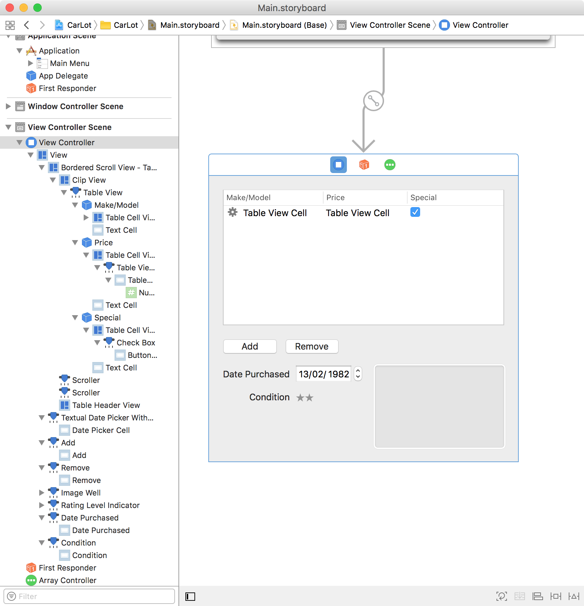
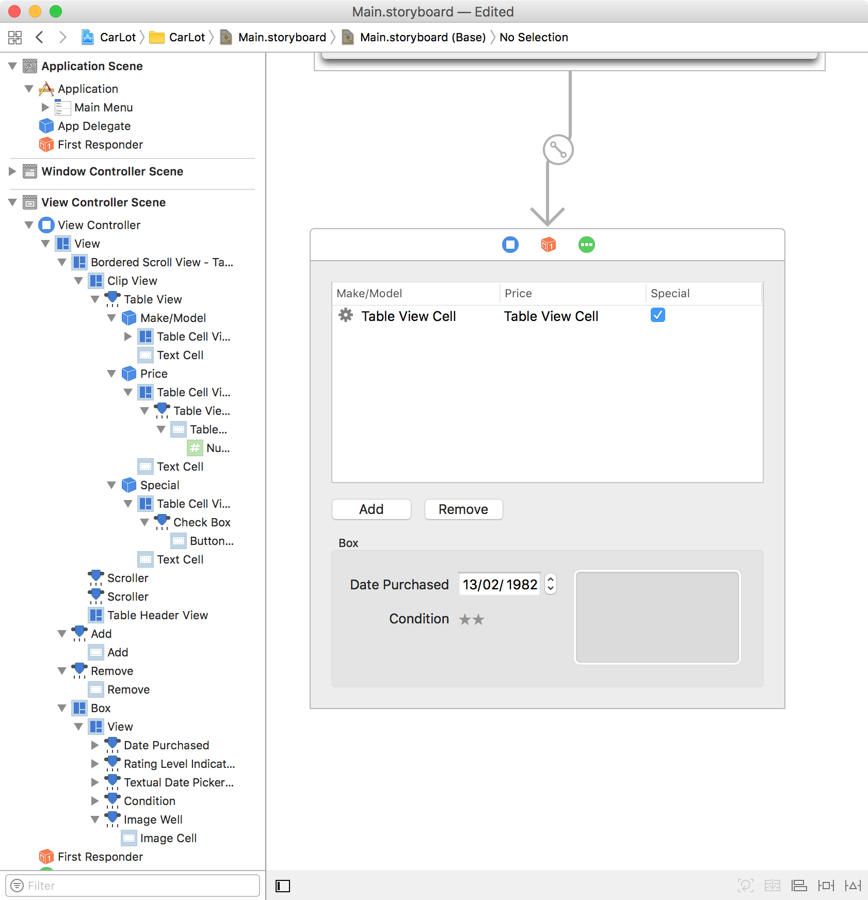

This lab explores Core Data. Given how Apple-specific Core Data is, we have not discussed it in detail in class, and it won't be a examined. Nonetheless, this lab encourages you to gain some exposure to it, in the hope that it may be useful to you in future.
In this lab you will develop a small (almost-)no-code application that demonstrates the basics of core data. The concept for the application is taken from Chapter 11 of the 4th edition of Hillegass and Preble.
We have seen how the NSArrayController and bindings can eliminate significant amounts of glue code. The NSManagedObjectContext class can observe instance variables of your data objects and take care both of undo / redo functions, and loading and saving the data.
The system needs to know about the data in your objects in order to load and save them. In particular the names and types of attributes will need to be supplied.
In terms of terminology, what we'd think of as a "class" is termed an "entity". What we might call an "instance variable" is termed a "property". CoreData then manages these attributes, and relationships between objects.
Create a new project in Xcode as a Cocoa Application. Call the project CarLot, set the document extension to carlot, and enable both the document-based application and core data options.
The aim of this application is to support management of cars stored across a number of used-car lots.
Open Document.xcdatamodeld and "Add Entity" and name (or rename) the entity "Car". Ensure that Car is selected and then add six attributes with names and values as follows:
| Name | Type |
|---|---|
| condition | Integer 16 |
| datePurchased | Date |
| makeModel | String |
| onSpecial | Boolean |
| photo | Transformable |
| price | Decimal |
Open Main.storyboard in the Interface Builder. Drag an array controller into your "View Controller Scene".
Use the Bindings Inspector to bind the managedObjectContext of the array controller to the View Controller. Our intended target is the managedObjectContext of our Document. The Model Key Path needs to be set to self.view.window.windowController.document.managedObjectContext
(which is somewhat epic).
Use the Attributes Inspector to set the Mode of the Array Controller to "Entity Name" and set the name to be "Car". Enable the "Prepares Content" option.
In the Identity Inspector, set the Label of the Array Controller to "Cars".
In earlier versions of this lab, instead of the above key path, our instructions suggested using the Model Key Path self.representedObject.managedObjectContext (as done in the previous lab) with the downside that a small amount of code is needed to set representedObject. If you want to use this approach then one line needs to be added to to Document.swift. Add a new final line to the makeWindowControllers() method that contains:
windowController.contentViewController?.representedObject = self
Place a table view on your document window, use the left-hand-side Navigation Panel to select the actual "Table View" from within the Bordered Scroll View, and use the Attributes Inspector to change the Content Mode to "View Based" if it is not already set. Set the table to have three columns, entitled "Make/Model", "Price" and "Special". (You can name the columns by interacting with the column headers on the table view.)
Use the Navigation Panel to select the Table Cell View within the first column, and delete it. Drag into its place an "Image & Text Table Cell View" from the Library. Check that your columns all contain a Table Cell View, that contains a Table View Cell. In addition the first column's cell view has an Image View also.
Drop a number formatter into the Table View Cell for the Price column. Set the format to be 10.4+ Default, with style Currency.
Delete the Table View Cell (not the Table Cell View) from the third column (you can use the Identity Inspector to check that it's the NSTextField you've selected), and insert a "Check Box Button" (Not a "Check Box Button Cell") in its place.
Below the table view place a Date Picker, two Push Buttons, an Image Well and a Level Indicator, so as to match the interface depicted below. Make the Image View editable in the Attributes Inspector. Use the "Ratings" style for the level indicator to get stars, and set the maximum to be 5, and minimum 0 (warning and critical can be set to 5). Also make sure that the control is editable.
Select all of the controls below the add and remove buttons, and Editor -> Embed In -> Box to wrap them into a box..
Bind the table view's Content binding to (the Array Controller) Cars' arrangedObjects, but leave the Model Key Path empty. Bind the Selection Indexes to Cars' selectionIndexes.
Each column's Table View Cell and Image View control needs to have bindings set as in the following table:
| Binding | Bind to | Controller Key | Key Path |
|---|---|---|---|
| value of Col 0 Image View | Table Cell View | Empty | objectValue.photo |
| value of Col 0 Text Field | Table Cell View | Empty | objectValue.makeModel |
| value of Col 1 Text Field | Table Cell View | Empty | objectValue.price |
| value of Col 2 Check Box | Table Cell View | Empty | objectValue.onSpecial |
Use the Attributes Inspector to check that each Table View Cell in the table view has its behaviour set to be editable.
Connect the Add and Remove button so that they trigger the "add:" and "remove:" methods of the array controller.
Bind the controls in the box to the selection of the array controller
| Binding | Bind to | Controller Key | Key Path |
|---|---|---|---|
| value of date picker | Cars | selection | datePurchased |
| enabled of Remove button | Cars | canRemove | |
| value of level indicator | Cars | selection | condition |
Also bind the value of the image view to Cars, with the controller key "selection" and the key path "photo". The checkbox "Conditionally Sets Editable" should be enabled.
Now select the box, and in bindings under the "Title With Pattern" section, bind Display Pattern Title1 to Cars. The controller key needs to be "selection" and the model key path "makeModel". The Display Pattern should be set to "Details for %{title1}@". Also, the No Selection Placeholder should be "
We will configure the first two columns to appear in bold for cars that are on special. For the first two columns' Table View Cells, bind the "Font Bold" to the Model Key Path "objectValue.onSpecial".
Build and run your application. If everything has been set up correctly, you should be able to edit the details of your application in place, including dragging images into the image well. Undo and redo should work, as should saving and loading documents.